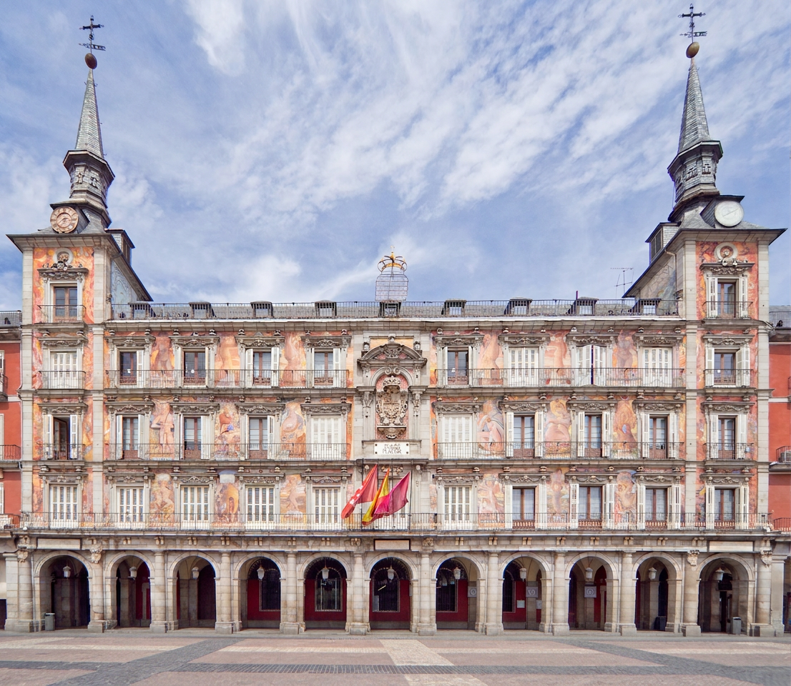
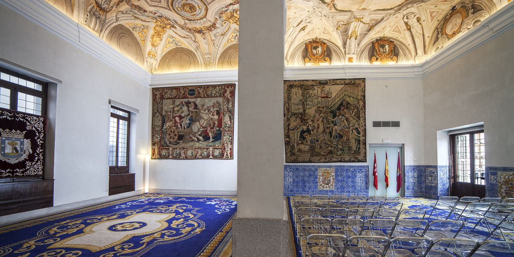

Ceremonia Madrid

Día: viernes 20 de noviembre de 2026
Hora: 11:15
Lugar: Casa de la Panadería – Plaza Mayor
La Casa de la Panadería es el edificio más emblemático de la Plaza Mayor. Situada en el lado norte de la plaza, destaca por su fachada decorada con coloridos frescos, sus torres angulares y sus balcones, desde los que antiguamente la realeza presenciaba los actos y celebraciones que tenían lugar en la plaza.
Construida entre finales del siglo XVI y comienzos del XVII, recibe su nombre porque en su planta baja se encontraba la tahona o panadería principal de la villa de Madrid. A lo largo de su historia ha albergado instituciones como la Real Academia de Bellas Artes y dependencias municipales. Hoy acoge el centro de información turística de la ciudad.
El salón

El salón donde actualmente se celebran las bodas civiles en la Casa de la Panadería es el Salón Real, una elegante estancia histórica situada en la planta noble del edificio. Antiguamente formó parte de las dependencias de la familia real y conserva una cuidada decoración con azulejos y tapices del siglo XVII, amplios techos y bellos frescos en sus bóvedas, que le aportan un ambiente solemne y distinguido. Desde sus balcones se disfruta además de una privilegiada vista de la Plaza Mayor, lo que convierte este espacio en uno de los lugares más singulares para celebrar una boda civil en Madrid.
La ceremonia será un acto breve –aproximadamente 10 o 15 minutos– por lo que tendremos que estar puntuales, y sobre todo disfrutar mucho de ese momento porque se pasará muy rápido 😊
← Inicio